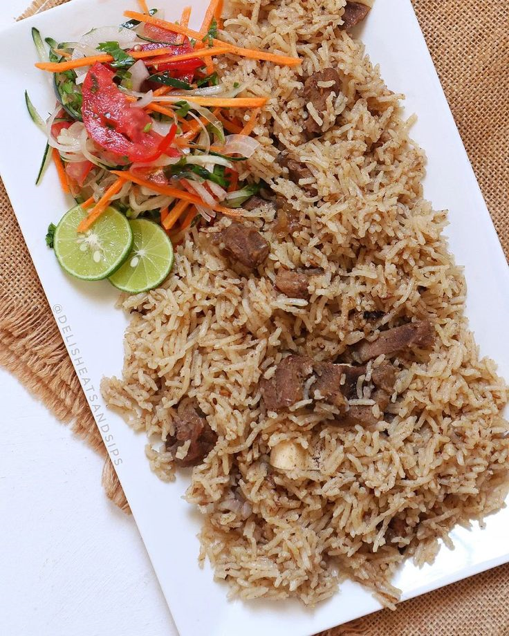

Pilau Recipe

Description
Pilau is a flavorful spiced rice dish popular along the East African coast, especially in Kenya and Tanzania.
Made with fragrant spices like cinnamon, cloves, cumin, and cardamom, Pilau is traditionally cooked with rice, meat (usually beef or goat),
onions, and garlic, creating a rich, aromatic meal. It’s often served at special occasions and pairs well with kachumbari (fresh tomato onion salad)
or a side of vegetables.
Ingredients
- 2 cups basmati or long grain rice
- 500g beef or goat meat
- 1-2 potatoes, peeled and cubed
- 1 large onion, finely sliced
- 3 cloves garlic, minced
- 1 tbsp fresh ginger, grated
- 2-3 tomatoes, chopped or blended
- 4 cups water or broth
- 4 tbsp oil
- Pilau masala
- Salt to taste
Steps
- Boil the meat with garlic, ginger, salt, and a bit of water until tender. Set aside with its broth
- In a large pot, heat oil.
- Add the sliced onions and cook until deep golden brown, this gives Pilau its signature color and depth.
- Add in garlic, ginger and pilau masala and cook for 1-2 mins.
- Add tomatoes and cook until they form a thick, rich paste.
- Add in the boiled meat and stir well to coat everything in the masala.
- Stir in soaked rice and diced potatoes. Mix everything evenly.
- Pour in 4 cups of water/broth. Taste and adjust salt.
- Bring to a boil, then reduce heat, cover tightly, and simmer on low until rice is cooked and liquid is absorbed
- Turn off heat and let Pilau rest for 5-10 mins with lid on then fluff with fork
Serving
Serve with a side of kachumbari/ guacamole
Home